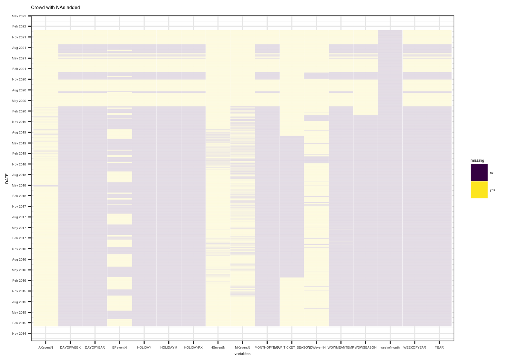
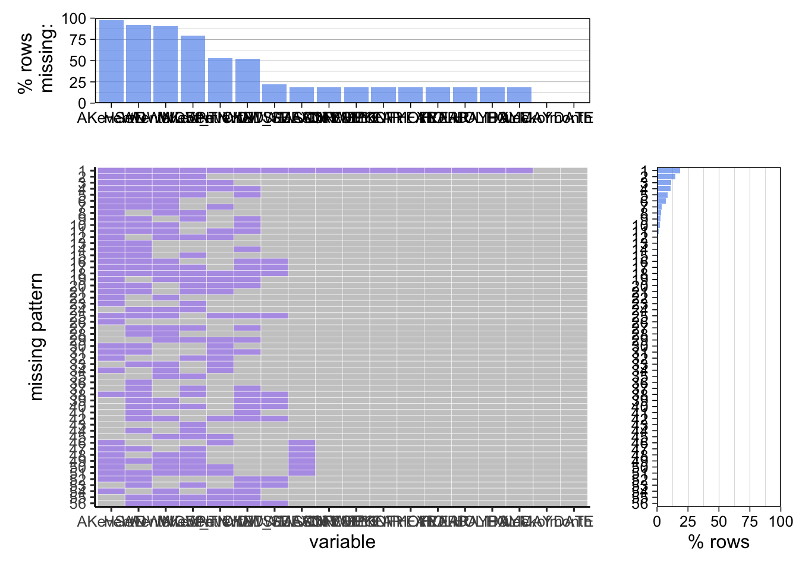

Chapter 4 Missing values
4.1 Missing patterns
For the dates, the data file has missing data from 03/14/2020 to 06/26/2020 and from 06/28/2020 to 07/07/2020, from 07/21/2020 to 10/30/2020 and from 01/02/2021 to 04/29/2021, and incomplete data from 05/04/2021 to 06/12/2021. This is also shown in the missing plot graphed below.
We did a transformation step before making the miss plot - we fill the DATE to be complete according to the nature of date. The date that are filled through the transformation as a result has missing value for all other features and they account for about 20% of the total data.

Columns related to events (WDWeventN, MKeventN, EPeventN, HSeventN, AKeventN) have a number of missing value at percentage ranging from 55% to 95%. AKeventN is the feature that has the most missing value, for about 95%. From the second plot, we may also recognize that the events data tend to be missing together and the other missing patterns are not obvious.
The columns depicts ticket price (WDW_TICKET_SEASON) only have data from 02/28/2016 to 06/29/2019.
Besides, the other features except date have a similar missing rate at about 18%.
From the second plot, there are about 50% of the data do not have missing value. There is a trend that WDWSEASON is missing only when WDWTICKETSEASON is missing.
For variable mean temperature(“WDWMEANTEMP”), there are six missing values, which are 11/25/2016, 12/09/2016, 01/05/2017, 04/03/2017, 04/14/2017, 04/30/2017.
4.2 Assessment of impact
The reason for missing is that Disney World was closed from Mar 15, 2020 to 07/10/2020 because of the Covid-19 pandemic. And even until today, the pandemic has an effect on the crowdedness of Disney World. Thus the missing data of the dates mentioned above do not have a large effect on our final project because we have a very large data set with time range of 7 years.
Besides the date, the feature for ticket price is not continuously documented for unknown reasons. we only have data from 02/28/2016 to 06/29/2019. However, this would not have large impact on our final project because we want to address the dependent relationship between day of week and the ticket price and the data we have now is enough for the analysis.
For the missing data regarding events, it does not hurt either because we are mainly mapping the proportion of different events rather than analyze them in respect to the date.
To sum up, the missing dates after the pandemic may have an effect on our analysis of the crowd of Disney World. However, since we have a huge data set from 2015 to 2021, we still have enough data to analyze and give conclusive results.